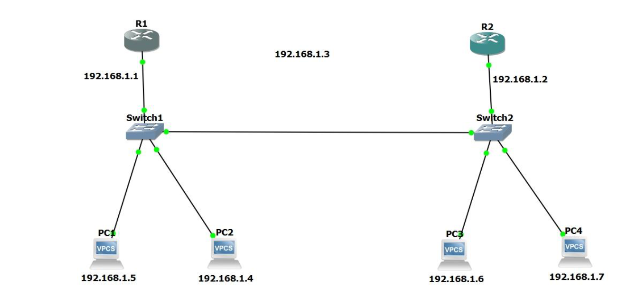

Enterprise Network Emulation and Security Suite (GNS3)
The GNS3 Enterprise Suite represents a comprehensive collection of virtualized network environments designed to simulate production-grade corporate infrastructures. By utilizing real Cisco IOS and Fortinet images, this suite demonstrates advanced implementation of routing protocols, security gateways, and management frameworks.
Abstract
The primary objective of these laboratories was to design and configure scalable, secure, and redundant networks. Each module addresses specific enterprise requirements, from secure remote management using encrypted protocols to implementing site-to-site VPN tunnels for encrypted data transit across untrusted networks.
1. Dynamic Routing Implementation
Dynamic routing protocols form the backbone of these labs, ensuring optimized path selection and loop prevention.
1.1 OSPF Multi-Area
Configuration of Area 0 (Backbone) and subsidiary areas to reduce SPF processing. [View Lab Manual]
1.2 Basic EIGRP
Implementation of the Diffusing Update Algorithm (DUAL) for rapid convergence. [View Configuration]
2. Security & Remote Management
Securing the control plane and data plane is critical for maintaining enterprise confidentiality.
2.1 FortiGate VPN Implementation
Implementation of site-to-site VPN tunnels using FortiOS 7.x to secure branch-to-HQ communication. [View VPN Guide]
2.2 SSH & Telnet Labs
Comparing encrypted vs. cleartext management. [SSH Lab] | [Telnet Report]
3. Network Topology & Design
3.1 Dual-Star Topology with Routing
A resilient design featuring redundant core switches and multi-homed routing paths. [View Documentation]
3.2 Multi-Subnet Internet Access
Configuration of NAT (Network Address Translation) and PAT to allow multiple internal subnets to access the public internet. [View Topology]
4. High Availability (Redundancy)
The VRRP (Virtual Router Redundancy Protocol) lab ensures that the gateway remains accessible even during hardware failure. By sharing a virtual IP address between multiple routers, the network achieves near-zero downtime. [View VRRP Lab]

Fig 2.1: Integrated GNS3 environment showing OSPF routing and FortiGate security node deployment.